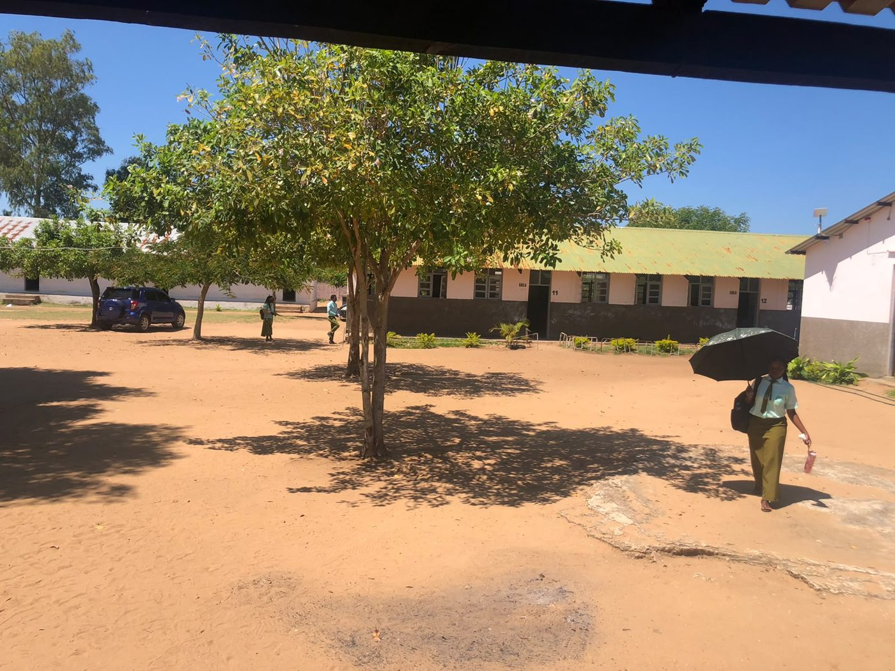
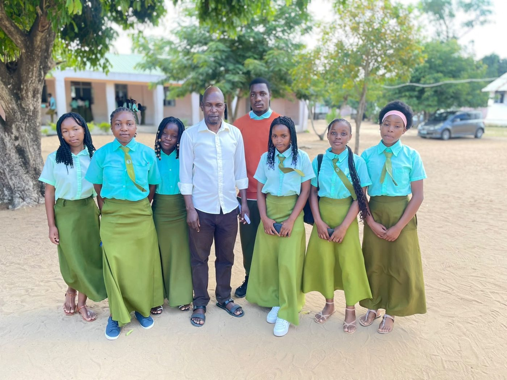
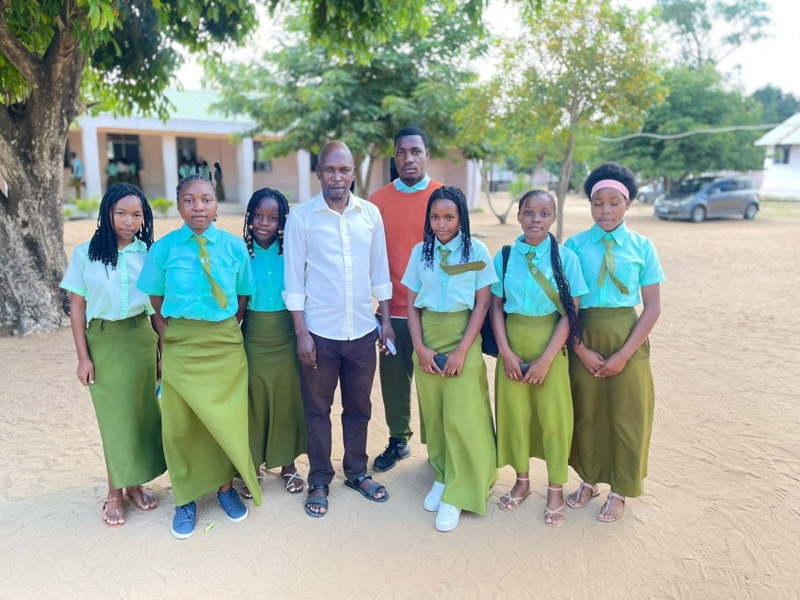
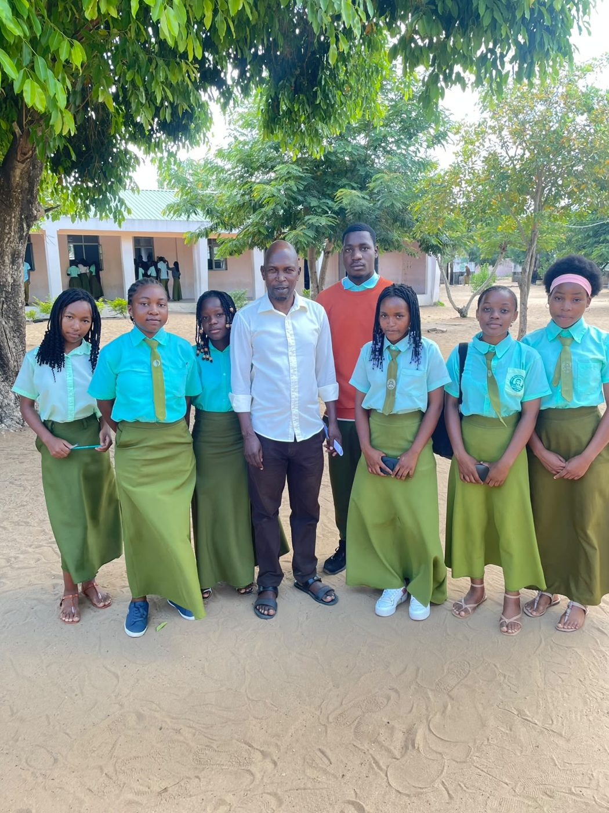
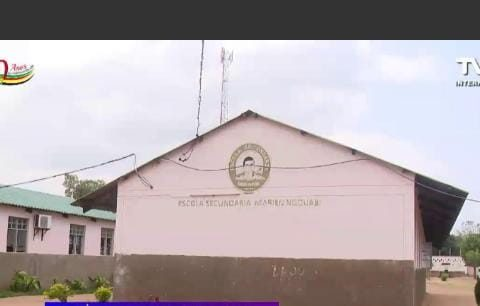
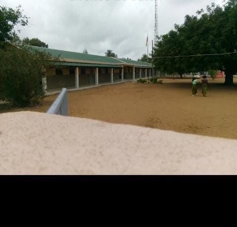
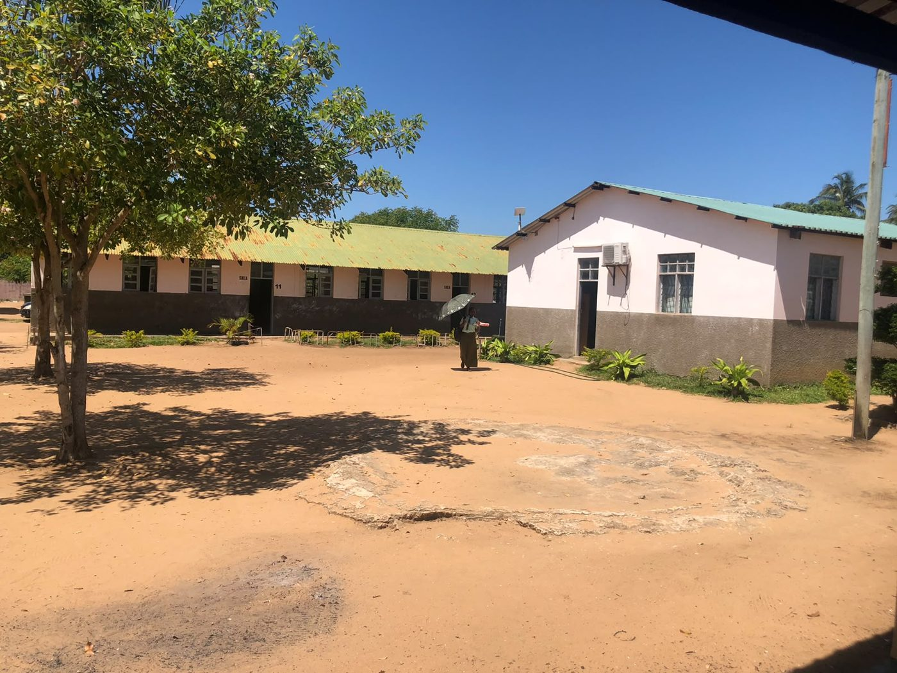
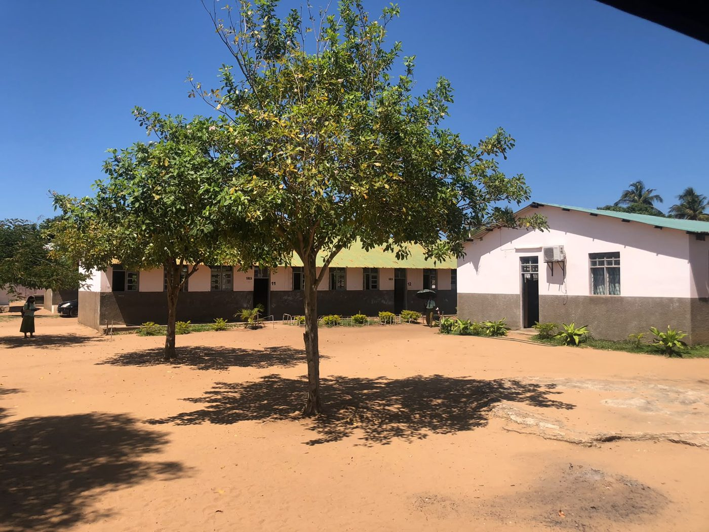
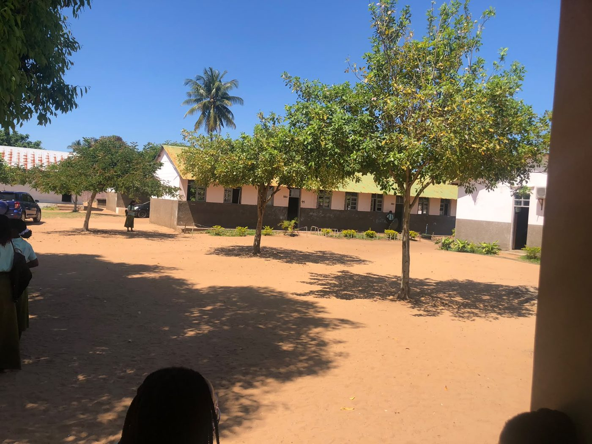

História e Evolução da Escola Secundária Marien Ngouabi
De Escola Primária Completa, em 1977, a Escola Secundária, em 2015. Conhece a história de uma escola de Xai-Xai, província de Gaza, ligada às cheias de 1977, à formação de um bairro e à memória de um líder africano.
Ler a históriaVer a cronologia🌊 As cheias de 1977
O contexto que levou à organização de novas comunidades no sul de Moçambique.
🌍 Um nome africano
Homenagem a Marien Ngouabi, antigo presidente da República do Congo.
📈 Evolução
Primária Completa, anexa da Escola Joaquim Chissano e, por fim, Escola Secundária.

Introdução
A Escola Secundária Marien Ngouabi é uma instituição de ensino localizada na cidade de Xai-Xai, província de Gaza. A sua história está profundamente relacionada com o desenvolvimento da educação na região e com as transformações sociais ocorridas em Moçambique, particularmente na década de 1970.
Fundada em 1977, a instituição começou por funcionar como Escola Primária Completa, desempenhando um papel importante na formação académica das crianças da comunidade.
Ao longo dos anos, passou por diferentes transformações administrativas e pedagógicas, destacando-se a sua vinculação à Escola Secundária Joaquim Chissano, em 2006, e a sua posterior elevação à categoria de Escola Secundária, no dia 23 de Fevereiro de 2015.
A atribuição do nome Marien Ngouabi representa também uma ligação à história africana, uma vez que a instituição homenageia um antigo presidente da República do Congo, cuja trajectória política e militar marcou a história do continente.
O presente trabalho apresenta o historial da escola, desde a sua origem até à actualidade, abordando igualmente o contexto das cheias de 1977, a formação do bairro, a biografia de Marien Ngouabi e as principais etapas da evolução da instituição.
Objectivos
Objectivo geral
Conhecer a história e a evolução da Escola Secundária Marien Ngouabi, desde a sua fundação até à actualidade.
Objectivos específicos
- Conhecer as circunstâncias históricas da fundação da escola.
- Compreender a origem e o significado do nome Marien Ngouabi.
- Conhecer a biografia e a carreira política e militar de Marien Ngouabi.
- Compreender a relação entre as cheias de 1977 e a formação do Bairro Marien Ngouabi.
- Identificar as principais transformações administrativas e pedagógicas da instituição.
- Conhecer a primeira directora da escola após a sua elevação à categoria de secundária.
- Reconhecer a importância da instituição para a comunidade.
Desenvolvimento
1. Origem e fundação
A Escola Secundária Marien Ngouabi foi fundada em 1977, na cidade de Xai-Xai, província de Gaza. A sua origem está associada ao contexto de reorganização social e territorial que se verificou na região após as cheias que afectaram o vale do rio Limpopo.
Inicialmente, funcionava como Escola Primária Completa, proporcionando formação escolar às crianças da comunidade. A fundação ocorreu no mesmo ano em que se organizou a comunidade que passou a ser conhecida como Bairro Marien Ngouabi.
Segundo o estudo de Edson Tito Fafetine e Ângelo Américo Mauai, a escola recebeu esse nome em homenagem ao antigo presidente da República do Congo, Marien Ngouabi.
2. As cheias de 1977 e a formação do bairro
Em Fevereiro de 1977, Moçambique foi atingido por fortes chuvas associadas à Depressão Tropical Emily, provocando grandes inundações nas províncias do sul, particularmente em Gaza. O transbordo do rio Limpopo teve graves consequências para as populações das margens.
🏚️ Habitações
Destruição de habitações e infra-estruturas.
🌾 Agricultura
Destruição de campos agrícolas e sistemas de irrigação.
🛣️ Estradas
Interrupção de estradas e pontes.
👨👩👧 Famílias
Perda de vidas, de animais e de bens, e deslocação de numerosas famílias.
Como consequência, muitas famílias tiveram de abandonar as zonas baixas e procurar locais mais elevados e seguros.
Formação da comunidade de Marien Ngouabi
De acordo com a investigação de Fafetine e Mauai, a formação da comunidade esteve relacionada com a organização de uma aldeia que envolveu pessoas provenientes das cheias do Bilene. Quando chegaram à região, algumas dessas populações foram temporariamente acolhidas na Escola de Madeyeni, enquanto se organizava a nova comunidade.
Depois, iniciou-se a organização da aldeia e a ocupação dos espaços circundantes, dando origem ao Bairro Marien Ngouabi. O nome Madeyeni permaneceu associado à memória do local. As cheias de 1977 contribuíram ainda para o surgimento de outras aldeias comunais em Xai-Xai, como Patrice Lumumba e Coca Missava.
3. Origem do nome Marien Ngouabi
O nome foi atribuído em homenagem a uma personalidade histórica africana. A escolha não foi aleatória: representava solidariedade pan-africanista, reconhecimento entre os povos africanos e valorização das personalidades que marcaram a luta pela independência e soberania dos países do continente.
4. Biografia de Marien Ngouabi
Militar e político congolês, desempenhou um papel importante na história da República do Congo (Congo-Brazzaville). Nasceu a 31 de Dezembro de 1938, em Ombélé, próximo de Owando, no norte do país, numa família camponesa.
Formação académica e militar
Iniciou os estudos primários em Owando, em 1947. Em 1953, ingressou na Escola Militar Preparatória Général-Leclerc, em Brazzaville. Prosseguiu a preparação em França, em instituições de formação de oficiais, e regressou ao Congo em 1962 com a patente de segundo-tenente.
Carreira militar
Exerceu funções nas Forças Armadas e foi comandante de unidades militares, incluindo o primeiro batalhão de paraquedistas do Congo. A experiência militar contribuiu para a sua entrada na vida política.
Carreira política e chegada à presidência
Em Agosto de 1968, destacou-se nas mudanças políticas que levaram à criação do Conselho Nacional da Revolução. A 31 de Dezembro de 1968, assumiu a liderança do Estado. Foi adoptada uma orientação socialista e, em 1969, o país passou a designar-se República Popular do Congo.
Fundação do Partido Congolês do Trabalho
A 31 de Dezembro de 1969, fundou o Partido Congolês do Trabalho (PCT), que passou a ter um papel central na organização política do país. Entre os aspectos associados à sua governação: defesa da soberania nacional, unidade nacional, valorização da educação, promoção da saúde pública e solidariedade entre os povos africanos.
Morte
Faleceu a 18 de Março de 1977, em Brazzaville, assassinado quando ainda era presidente, com 38 anos. Foi um acontecimento marcante na memória nacional do Congo. Coincide com o ano da fundação da escola e da organização do bairro.
5. Relação entre Marien Ngouabi, as cheias e o bairro
As cheias explicam o contexto de formação da comunidade; a homenagem explica a escolha do nome. Esta distinção é fundamental para compreender correctamente o historial da escola.
6. A primeira directora da escola secundária
Após a elevação à categoria de Escola Secundária, a 23 de Fevereiro de 2015, foi nomeada primeira directora a Sra. Antonieta Naftal Madede, que assumiu a responsabilidade de dirigir o funcionamento da instituição nesta nova etapa.
7. Importância para a comunidade
- Promoção do acesso à educação.
- Formação académica e intelectual dos jovens.
- Preparação dos estudantes para o ensino superior.
- Desenvolvimento de valores como responsabilidade, disciplina e cidadania.
- Contribuição para o desenvolvimento social da comunidade.
- Preservação da memória histórica do bairro e da personalidade que deu nome à escola.
Cronologia da escola
Resumo em tabela
| Ano / Data | Acontecimento |
|---|---|
| 1977 | Fundação; funcionamento como Escola Primária Completa |
| 2006 | Anexa da Escola Secundária Joaquim Chissano |
| 23/02/2015 | Elevação à categoria de Escola Secundária |
| 2015 | Primeira directora: Antonieta Naftal Madede |
Galeria de fotografias
Registos da Escola Secundária Marien Ngouabi, em Xai-Xai. Toca numa imagem para ampliar.
Com o pedagógico da escola



A escola





Propostas e recomendações
Para que a memória da escola não se perca, o grupo propõe:
- Organizar o arquivo histórico da escola (documentos, fotografias, actas), com apoio da Direcção.
- Criar um cantinho da memória na escola, com a cronologia e as fotografias.
- Recolher testemunhos de antigos alunos, professores e moradores do bairro, com autorização de cada pessoa.
- Assinalar o aniversário da escola com uma actividade cultural e histórica.
- Incluir o historial da escola nas actividades de História e de Geografia.
Aos alunos
Conheçam a história da vossa escola e do bairro, valorizem o património e ajudem a transmiti-lo.
Aos professores
Integrem o historial da escola nas aulas e promovam trabalhos de pesquisa com fontes credíveis.
Aos encarregados de educação e à comunidade
Partilhem memórias e documentos sobre o bairro e a escola, contribuindo para o registo da sua história.
À Direcção da escola
Preserve e disponibilize o historial escrito, confirme as datas oficiais e identifique quem dirigiu a escola em cada etapa.
Conclusão
A história da Escola Secundária Marien Ngouabi é marcada por acontecimentos históricos, transformações sociais e diferentes etapas de desenvolvimento educativo. Desde a fundação, em 1977, como Escola Primária Completa, passando pela vinculação à Escola Secundária Joaquim Chissano, em 2006, até à elevação a Escola Secundária, em 23 de Fevereiro de 2015, a instituição percorreu um caminho significativo.
A sua origem está relacionada com a reorganização das comunidades após as cheias de 1977, que afectaram Gaza e contribuíram para o surgimento de novas aldeias comunais. A homenagem a Marien Ngouabi representa uma ligação à história política africana e aos ideais de solidariedade, unidade e independência dos povos do continente. A nomeação de Antonieta Naftal Madede como primeira directora da escola secundária é também um marco da sua história administrativa.
Referências bibliográficas
- FAFETINE, Edson Tito; MAUAI, Ângelo Américo. (2024). Estudo de nomes próprios de escolas da cidade de Xai-Xai à luz da Onomástica: um contributo para a preservação de dados político-sócio-histórico-geográfico-culturais. Revista Njinga & Sepé.
- SITOE, Iceu Carlos. (2023). Aldeia Comunal Ravene: Coletivização, transformações sociais e violência cultural em Moçambique, 1976-1992. Universidade Federal de Minas Gerais.
- PARTIDO CONGOLÊS DO TRABALHO. Biografia de Marien Ngouabi.
- SOUTH AFRICAN HISTORY ONLINE. Marien Ngouabi, President of Congo dies. 18 de Março de 1977.
- ESCOLA SECUNDÁRIA MARIEN NGOUABI. Historial escrito da Escola Secundária Marien Ngouabi. Documento institucional não publicado.
Elementos do grupo
Escola
Escola Secundária Marien Ngouabi, Xai-Xai
Turma / Classe
[ex.: 12.ª classe, turma A02]
Professor(a)
[Nome do professor(a)]
Membros
- [Nome completo]
- [Nome completo]
- [Nome completo]
- [Nome completo]